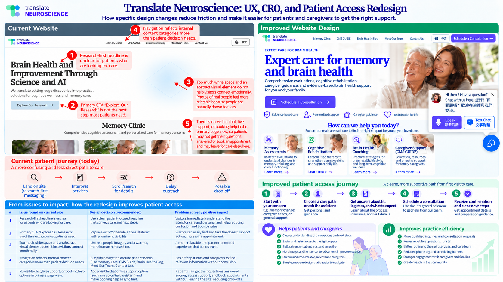

AI agents answer every call and message, book assessments and keep families informed.
When a family is worried about memory, make Translate Neuroscience their first call
What our audit found across Google, your website, directories, search and AI tools, and a two-stage plan to help more families find you, reach you and book an assessment.
At a glanceSelect any area to open its tab.
Google profile
No reviews found; hours and photos missing
Needs workBusiness details
Two names in use. LinkedIn typo: the text says www.translateneuro.co, but the link opens .com
InconsistentLocal visibility
0 of 169 Maps points in Los Angeles
Not visibleWebsite performance
5.0 s on phones vs. a 2.5 s target
Slow on mobileWebsite contact
The published number rings with no voicemail. Email promises a reply within 24 hours
GapListings
0 of 31 complete directory matches
GapSearch
~0 monthly visitors from Google search
Not visibleAI visibility
Named in 0 of 15 AI answers
Not visibleAlready working in your favor
Yes A text-capable number with tap-to-call
Yes AI crawlers can reach your site, and an llms.txt file is in place
Yes Traditional Chinese content on your website
Yes Pages stay steady while loading, and accessibility scored 82 to 92
The opportunityFamilies in Los Angeles need memory care, and specialists are hard to find.
190,300
people 65 and older in Los Angeles County living with Alzheimer’s or another dementia3
322,280
Los Angeles County adults caring for someone with dementia or cognitive impairment3
55%
of primary care doctors say there are not enough dementia care specialists in their communities2
7.4M
Americans 65 and older living with Alzheimer’s in 20262
From your audit · Business details
Business-critical information includes key details that can significantly affect a practice’s performance and reputation.Here’s a short synopsis of some crucial elements:
Website contact and patient access
- Phone number is easy to find
- Tap-to-call works on phones
- Business number can receive text messages
- Chat on your website
- An inquiry form visitors can find
- A “request an assessment” or booking button
- A clear next step on the homepage
- Hours are listed as Monday–Friday, 9:00 AM–5:00 PM, with no time zone
- A call to (619) 630-8676 goes unanswered and reaches no voicemail.
- The contact email, info@translateneuro.com, says “We respond within 24 hours”
Why it matters
Prospective patients or their family members often have questions before they are ready to schedule a consultation. They may be searching the web after hours.
How fast that first reply comes decides whether you reach them while they are still looking. An MIT study5 indicated that answering a new inquiry within an hour was nearly 7 times as likely to become a real consultative conversation as waiting another hour, and more than 60 times as likely as waiting 24 hours or longer. The odds of qualifying a lead drop 21-fold if the response time stretches to 30 minutes instead of 5 minutes. The likelihood of connecting with and qualifying a lead decreases by more than 10 times within the first hour of submission. A promise of a reply within 24 hours sits at the slow end of that range, and a number that only rings gives a family no way to leave a message. And when visitors cannot get an immediate response or quickly find what they came for, they rarely wait around: Nielsen Norman Group research found that users typically abandon a web page within 10 to 20 seconds unless it quickly shows them what they are looking for.14
AI engines also look for the same things. Our scan rated “send an inquiry” and “book a consultation” as not ready, while “find the phone number” and “start a call” were ready.
An AI voice agent can answer the phone 24 hours a day, 7 days a week, 365 days a year. On the website, a voice and text concierge can answer immediately, on the same 24/7/365 schedule. Both can answer approved questions, book appointments and follow your escalation protocol. The setup is HIPAA compliant. A HIPAA-compliant web form can respond as soon as someone submits it, so a family is not left hoping for an email back. An embedded calendar lets them schedule a consultation on the site.
Business identityCritical business contact details that customers use to find and connect with your business. Accurate and consistent information across all touchpoints builds trust and improves customer accessibility. Google, your website and LinkedIn describe the practice in different ways. Google, directories and AI tools match up these details to decide whether listings belong to the same business. When they differ, it is harder for them to connect the pieces.
| Detail | Website | Google profile | |
|---|---|---|---|
| Name | Translate Neuroscience | Translate Neuro | Translate Neuroscience |
| Web address | translateneuro.com | translateneuro.com | www.translateneuro.co — typo; this link opens the .com page |
| Location | To confirm | Map pin in the central Sierra Nevada, about 230 miles from USC | To confirm |
| How it’s described | Memory assessment, cognitive rehabilitation, brain-health coaching, GUIDE caregiver support | Category: Health consultant | Category: Wellness and Fitness Services. Description: Wellness and Fitness Services |
Company page found. Typo: the website text says www.translateneuro.co, but the link opens translateneuro.com. Category and description: Wellness and Fitness Services.
No page found in our search, so no Facebook listing for families or referral partners.
From your audit · Tech stack
Evaluate the foundational tools driving your online marketing efforts.
A robust digital marketing infrastructure is crucial for measuring performance, understanding your audience, and maximizing the return on your marketing investments.
Measurement and tracking
- Website analytics (Google Analytics)Not detected
Your website is missing Google Analytics tracking. Without it, you’re potentially missing out on valuable insights about your website visitors, their behaviour, and your site’s performance.
- Google Tag ManagerNot detected
We noticed that Google Tag Manager is not implemented on your website. This tool could streamline your marketing efforts and make it easier to deploy and manage various tracking codes.
- Google Ads campaigns*None detected
We detected that your business is not currently running any Google Ads campaigns. This means you may be missing out on valuable opportunities to reach potential patients who are actively searching for your services online.
- Google Ads pixel & conversion tracking*Not detected
Your site lacks a Google Ads conversion tracking pixel. This could limit your ability to measure the ROI of your Google Ads campaigns and make data-driven decisions to improve performance.
- Meta Pixel*Not detected
The Meta Pixel is not detected on your site. This means you may be missing opportunities to optimize Meta ad campaigns and build more targeted audiences.
- Website hostingNot identified
We couldn’t detect your website hosted on any major providers such as WordPress or LeadConnector. Hosting choice directly impacts SEO, site speed, and uptime. Shifting to a reliable, performance-optimized platform can improve search rankings and overall site experience.
Why this matters
Measurement: without analytics, there is no way to see how families find the site, which pages they read or where they leave.
Privacy first: on a healthcare site, any tracking needs a HIPAA review before it is added. We set up measurement that avoids sharing health details.
Platform: an unidentified platform is not a problem by itself. We will confirm who manages the site and what can be changed.
*Only relevant if and when running ads on the specific platform(s).
What our scan could detect on translateneuro.com. “Not detected” means the scanner didn’t see it, not that it is definitely missing.
From your audit · Google Business Profile
A complete and optimized Google listing makes it easier for prospective patients to find and trust your practice.
Your Google Business Profile is currently active and visible to customers, but missing some key information.
Google business profile
50%Here’s what we found on the Google listing:
Business address
Not applicable (service-based business)
Business website
Verified
Google photos
Not verified
Operational hours
Not verified
Phone number
Verified
Why this matters
2.7×
Customers are 2.7 times more likely to consider a business reputable when they find a complete Business Profile, and 70% more likely to visit and 50% more likely to consider purchasing from one.19 Profile completeness also ranks among the leading local ranking factors,20 on top of Google’s own relevance, distance and prominence signals.8
Post regularly
Google Posts put updates, events and offers directly on your profile in Search and Maps, and Google says fresh updates help customers decide to visit.21 Posting is not a ranking shortcut — its value is current, trustworthy information at the moment a family is choosing.
68%
of local business searches in Whitespark’s testing returned a Google AI Overview,23 and BrightLocal found Google’s AI relies heavily on Business Profile details, often summarizing them even when it cites other sources.22 A complete, accurate profile gives AI the right facts to repeat — and a reason to name you.
Book in place
Through an approved booking provider or an appointment link, patients can book directly from your profile on Search and Maps instead of hunting the website for a scheduler.24, 25 Fewer steps between finding you and booking means fewer families lost along the way.
From your audit · Listings & citations
Directory listings: no complete matches on 31 platforms that feed Google, map apps and AI tools
0
exact matches
4
partial matches
27
no matching record
Partial (4)
Google, ShowMeLocal, Brownbook, YP.com. Each showed your phone number; only Google showed a name, and none showed an address.
No matching record (27)
Facebook, Yelp, Tellows, Cylex, Hotfrog, N49, iGlobal, MyLocalServices, USCity, Navmii, WhereTo, AroundMe, MerchantCircle, Tupalo, CitySquares, Chamber of Commerce, 8coupons, eLocal, GoLocal247, YellowPages, Opendi, iBegin, EZlocal, Property Capsule, Hours.com, Judy’s Book, Acompio
Why this matters
Prominence
Google ranks local businesses partly on how well-known they are across the web.8
62%
of consumers would avoid a business if they found incorrect information about it online.9
Health directories
When families asked AI tools for a dementia specialist, the answers pointed to Healthgrades, Zocdoc and Vitals. Those are the listings to prioritize.1
Start here
Prioritize those listings: Google first, then Healthgrades, Zocdoc and Vitals, then the major general directories such as Facebook and Yelp. The rest follow — not all 31 platforms need fixing at once.
One version everywhere
Correct, consistent information across directories is imperative: the same name, phone number, website and description on every platform. When details differ, Google, map apps and AI tools cannot be sure the listings describe the same practice, and families lose trust.9
From your audit · Online reputation
Reviews: none found yet, so every review you earn now counts
Our scan found no Google reviews on your profile. That says nothing about the care you provide; it means families and Google have nothing to go on yet.
0
Google reviews found in our scan
0
other review sites with a matching listing (Yelp and Facebook showed no record)
What reviews do for you
Google says review count and rating factor into local ranking.8 Reviews also give families, and AI tools, words to describe you in your patients’ own language.
A review process built for healthcare
- Invite feedback by text or email after visits, at a moment you choose.
- No incentives, and no filtering who gets asked.
- Replies thank the reviewer without confirming that anyone is a patient or mentioning care details.
- Once reviews come in, show them on your website and Google profile.
Why this matters
Local rankings
Google says review count and rating factor into local ranking.8 Whitespark’s 2026 ranking-factor research puts high Google ratings 6th, quantity of Google reviews 9th and recency of reviews 11th out of 187 local pack factors — so a steady flow of new reviews counts, not a one-time burst.20
71%
of consumers always or regularly read online reviews when browsing for local businesses, and only 4% never do.26 For care specifically, nearly 1 in 2 patients regularly read reviews before booking an appointment, and half say having no reviews is as concerning as having negative ones.27 Right now, families making that check find nothing.
AI listens too
AI search tools draw on business listings and review platforms, surfacing and summarizing what customers say in their answers.22 Reviews give AI patient-language proof of what you do well. With zero reviews on Google and no matching listing on Yelp or Facebook, there is no patient voice for AI — or for Google — to quote, while competitors’ reviews can be.
From your audit · Website performance
Website performance: fast on desktop, held back on mobile
Google PageSpeed Insights (Lighthouse 13.5.0) tested translateneuro.com on October 27, 2026. Desktop scores are strong; on mobile, the main content takes too long to appear, and a handful of fixes would lift every score at once.
Mobile
PageSpeed InsightsPerformance77 target 90
Accessibility80 target 90
Best Practices92 target 90
SEO Basics92 target 90
Desktop
LighthousePerformance96 target 90
Accessibility90 target 90
Best Practices92 target 90
SEO Basics92 target 90
Same tests, desktop conditions: no throttled mobile network or phone CPU, so content paints much sooner.
Lab metrics
Main content appears (mobile)4.3 s target 2.5 s
Main content appears (desktop)1.1 s target 2.5 s
First content appears (mobile)1.9 s target 1.8 s
Page visibly fills in (mobile)7.2 s target 3.4 s
Layout shift (mobile / desktop)0 / 0.03 target under 0.10
Too busy to respond to taps (desktop)10 ms target 200 ms
Green mark = Google’s target. These are single-session lab tests (mobile: Moto G Power on Slow 4G), so treat them as a consistent yardstick, not a census of real visitors. On mobile the page was never busy blocking taps (0 ms) and nothing jumped around as it loaded (layout shift 0).
Why this matters
53%
of mobile site visits are abandoned when a page takes longer than 3 seconds to load.7
2.5 s
is Google’s target for main content. Core Web Vitals are part of the page experience signals Google’s ranking systems consider.6
4.3 s
is how long mobile visitors wait for the main content here — past the point where many people give up and keep searching.
58.5%
of worldwide website traffic came from mobile devices in 2025, so most families will meet this site on a phone first. It should be built mobile-first, not adapted to phones as an afterthought.16
What the reports found
| Finding | Mobile | Desktop | What Lighthouse found |
|---|---|---|---|
| Main content speed | 4.3 s | 1.1 s | On mobile, the headline waits on a chain of scripts, stylesheets and web fonts (longest chain about 4.3 s). The delay is in rendering the content, not in reaching the server. |
| Stability and responsiveness | Strong | Strong | No layout shift on mobile (0) and almost none on desktop (0.03); the page is rarely too busy to respond to taps (0–10 ms against a 200 ms target). |
| Accessibility | 80 | 90 | Text contrast is too low in the service and blog cards, contact blocks and footer, and the page has no main landmark on either. The mobile menu button also has no accessible name, which is why mobile scores lower. |
| SEO basics | 92 | 92 | The only scored miss on both is a missing meta description. Indexing, title, links, robots.txt, image alt text, hreflang and canonical all pass. |
| Best practices | 92 | 92 | The logo is served at the wrong aspect ratio, two Wix requests log console errors (403 and 404), and standard security headers (CSP, HSTS, COOP, frame control) are missing — those last items are noted but not scored. |
| Weight and caching | 461 KiB total | Static files are cached for only 1 hour (about 146 KiB could be saved with longer caching), 44 KiB of JavaScript is unused, CSS blocks the first render, and the oversized logo could save about 10 KiB. | |
Fix first
- Speed up mobile’s main content: load the headline font and hero content first, set fonts to swap in without hiding text, and defer scripts and styles that are not needed for the first screen, so the 4.3 s wait shrinks toward the 2.5 s target.
- Add the missing meta description — the only scored SEO failure on both reports, and the text Google shows under your name in search results.
- Fix accessibility basics: darken the muted text that fails contrast, wrap the page content in a main landmark, and give the mobile menu button an accessible name. This lifts Accessibility on both.
Then improve
- Cache static files for longer than 1 hour and remove the 44 KiB of unused JavaScript and duplicate code, so repeat visits and slower phones load less.
- Serve the logo at the size it is shown and in the right proportions — worth about 10 KiB and a cleaner header on every page.
- Clear the console errors by fixing the two failing Wix requests behind them (403 and 404), so the site stays clean for browsers and tools alike.
- Add standard security headers (CSP, HSTS, COOP and frame control) through the site’s hosting wherever Wix allows it.
Source: Google PageSpeed Insights — translateneuro.com (mobile) · desktop view. Lighthouse 13.5.0 lab tests, October 27, 2026.15
Website User Experience, Conversion Rate Optimization, and Patient Access

From your audit · AI visibility
AI visibility report
0
out of 100
Low visibility
Translate Neuroscience
Low visibilityYour business is rarely or never mentioned by AI assistants. Competitors may have an edge.
0 of 15 queries mentioned you
What does this mean for your business?
When potential customers ask AI assistants like ChatGPT or Google Gemini for recommendations in your industry, your AI Visibility Score shows how often your business comes up. A higher score means more organic exposure to people actively looking for what you offer — without paying for ads.
Why this matters
0 of 15
answers named you, across ChatGPT (two versions), Claude, Gemini and Perplexity.1
900M
people use ChatGPT every week, more than double the 400M of a year earlier.17
2.5B+
people a month see Google’s AI Overviews, the AI answer above the regular search results.18
8% vs 15%
how often Google users clicked a regular result when an AI summary appeared, compared with when none did.12
The groundwork is there: AI crawlers can reach your site and an llms.txt file is in place. What’s missing is consistent business details and service content they can read.
How you appear on each AI platformWe asked each major AI assistant your target questions and tracked whether your business was mentioned.
0%
ChatGPT · 0/3 queries
Not found
0%
Claude · 0/3 queries
Not found
0%
Gemini · 0/3 queries
Not found
0%
Perplexity · 0/3 queries
Not found
Question-by-question breakdownThese are the exact questions we asked each AI, and whether your business was included in the answer.
ChatGPT0/3 mentions · Didn’t mention you
“My mom is having memory problems. Can you recommend a good memory specialist in Los Angeles who can check for Alzheimer’s or dementia?”
Not mentioned✗ Didn’t mention you
“My dad has dementia, and getting him to appointments is difficult. Are there telehealth programs available in California that can help manage his care and support our family?”
Not mentioned✗ Didn’t mention you
“Can you recommend a Chinese-speaking doctor in Los Angeles who specializes in dementia and memory problems?”
Not mentioned✗ Didn’t mention you
Claude0/3 mentions · Didn’t mention you
“My mom is having memory problems. Can you recommend a good memory specialist in Los Angeles who can check for Alzheimer’s or dementia?”
Not mentioned✗ Didn’t mention you
“My dad has dementia, and getting him to appointments is difficult. Are there telehealth programs available in California that can help manage his care and support our family?”
Not mentioned✗ Didn’t mention you
“Can you recommend a Chinese-speaking doctor in Los Angeles who specializes in dementia and memory problems?”
Not mentioned✗ Didn’t mention you
Gemini0/3 mentions · Didn’t mention you
“My mom is having memory problems. Can you recommend a good memory specialist in Los Angeles who can check for Alzheimer’s or dementia?”
Not mentioned✗ Didn’t mention you
“My dad has dementia, and getting him to appointments is difficult. Are there telehealth programs available in California that can help manage his care and support our family?”
Not mentioned✗ Didn’t mention you
“Can you recommend a Chinese-speaking doctor in Los Angeles who specializes in dementia and memory problems?”
Not mentioned✗ Didn’t mention you
Perplexity0/3 mentions · Didn’t mention you
“My mom is having memory problems. Can you recommend a good memory specialist in Los Angeles who can check for Alzheimer’s or dementia?”
Not mentioned✗ Didn’t mention you
“My dad has dementia, and getting him to appointments is difficult. Are there telehealth programs available in California that can help manage his care and support our family?”
Not mentioned✗ Didn’t mention you
“Can you recommend a Chinese-speaking doctor in Los Angeles who specializes in dementia and memory problems?”
Not mentioned✗ Didn’t mention you
Live ChatGPT responsesThese are real-time responses from ChatGPT for each of your target questions. Highlighted text shows where your business was mentioned.
“My mom is having memory problems. Can you recommend a good memory specialist in Los Angeles who can check for Alzheimer’s or dementia?”Not mentioned
I’m sorry your mom is having memory problems. It’s understandable to be concerned, and you’re doing the right thing by looking for a specialist. Memory changes can have several causes, including Alzheimer’s disease, other forms of dementia, medication side effects, sleep problems, vitamin deficiencies, and thyroid issues. A thorough evaluation by a memory specialist can help determine what’s causing her symptoms.
For your mom, I’d look for a behavioral neurologist, cognitive neurologist, or geriatrician who specializes in memory disorders. Ideally, the specialist should offer cognitive testing, a neurological examination, appropriate brain imaging or lab work, and guidance on further testing for Alzheimer’s disease when indicated.
My top recommendations in Los Angeles
I found three strong options with dedicated memory-disorder programs. I’d start with UCLA or Cedars-Sinai for a comprehensive diagnostic evaluation.
1. UCLA Alice C. Rubin Integrated Memory Clinic
(My first choice)
Westwood · UCLA Health
Specializes in diagnosing early Alzheimer’s, mild cognitive impairment, and other dementias. Offers neuropsychological testing, second opinions, and follow-up care. [www.uclahealth.org](https://www.uclahealth.org/medical-services/neurology/alzheimers-diagnosis-care/outpatient-clinic?utm_source=chatgpt.com)[www.uclahealth.org](https://www.uclahealth.org/medical-services/neurology/alzheimers-diagnosis-care?utm_source=chatgpt.com)
Appointments: 310-794-1195
Address: 300 Medical Plaza, Suite B200, Los Angeles, CA 90024
[Official clinic website](https://www.uclahealth.org/medical-services/neurology/alzheimers-diagnosis-care/outpatient-clinic)
2. Cedars-Sinai Jona Goldrich Center for Alzheimer's and Memory Disorders
Beverly Grove · Cedars-Sinai
A multidisciplinary team that includes neurologists, geriatricians, and neuropsychologists. It evaluates Alzheimer’s and other memory disorders and offers coordinated care.
One physician to ask about is Sarah A. Kremen, MD, a neurologist listed by Cedars-Sinai as accepting new patients. [www.cedars-sinai.org](https://www.cedars-sinai.org/programs/neurology-neurosurgery/specialties/memory-disorders.html?utm_source=chatgpt.com)[www.google.com](https://www.google.com/maps/place/Dr.%20John%20M.%20Ringman%2C%20MD/data=!4m7!3m6!1s0x80c2c5ded3c14fc3:0x69499a8ce3ddd2f1!8m2!3d34.0626204!4d-118.2027107!16s%2Fg%2F1ydp279gc!19sChIJw0_B097FwoAR8dLd44yaSWk?authuser=0&hl=en&rclk=1&utm_source=chatgpt.com)[www.alzheimersla.org](https://www.alzheimersla.org/wp-content/uploads/2024/09/Alzheimers-Los-Angeles-Resource-Directory-updated-09-26-24.pdf?utm_source=chatgpt.com)
Appointments: 310-423-6472
Address: 127 S. San Vicente Blvd., Pavilion, Suite A6600, Los Angeles, CA 90048
[Official memory disorders program](https://www.cedars-sinai.org/programs/neurology-neurosurgery/specialties/memory-disorders.html)
3. USC Memory and Aging Center
Boyle Heights · Keck Medicine of USC
An academic neurology center associated with Alzheimer’s research and evaluation of cognitive disorders. Consider John M. Ringman, MD, a neurologist whose work includes memory loss and dementia. [www.google.com](https://www.google.com/maps/place/Dr.%20John%20M.%20Ringman%2C%20MD/data=!4m7!3m6!1s0x80c2c5ded3c14fc3:0x69499a8ce3ddd2f1!8m2!3d34.0626204!4d-118.2027107!16s%2Fg%2F1ydp279gc!19sChIJw0_B097FwoAR8dLd44yaSWk?authuser=0&hl=en&rclk=1&utm_source=chatgpt.com)[www.alzheimersla.org](https://www.alzheimersla.org/wp-content/uploads/2024/09/Alzheimers-Los-Angeles-Resource-Directory-updated-09-26-24.pdf?utm_source=chatgpt.com)
Contact: 800-872-2273
Address: 1520 San Pablo St., Suite 3000, Los Angeles, CA 90033
[Keck Medicine of USC](https://keck.usc.edu/)
How to get your mom evaluated
When you call, you can say:
t; “My mother has been experiencing memory problems, and we’d like a comprehensive evaluation for possible Alzheimer’s disease or another type of dementia. Which specialist should she see, and what is the earliest available appointment?”
Before the appointment, it helps to:
- Write down when her memory problems began and whether they are getting worse.
- Bring a list of medications, supplements, and existing medical conditions.
- Bring a family member who can describe changes in her everyday functioning.
- Check insurance coverage and ask whether a referral is needed.
If the confusion started suddenly, or she develops new weakness, difficulty speaking, or severe confusion, seek urgent medical care rather than waiting for a memory-clinic appointment.
Let me narrow this down for your mom
Which part of Los Angeles would be most convenient for her? For example, the Westside, San Fernando Valley, Downtown LA, Pasadena, or anywhere in the LA area.
If you tell me the area, I can narrow the list to the most convenient specialists and help you identify the best place to call first.
Sources cited by ChatGPT: Outpatient Clinic - Alzheimer's Diagnosis & Care · Alzheimer's Care & Treatment · Official clinic website · Memory Disorders – Los Angeles, California · Dr. John M. Ringman, MD
“My dad has dementia, and getting him to appointments is difficult. Are there telehealth programs available in California that can help manage his care and support our family?”Not mentioned
I'm sorry your family is dealing with this. Dementia can make even routine medical appointments stressful, especially as it becomes harder for your dad to travel, tolerate unfamiliar environments, or communicate his needs.
Yes — California has several programs and telehealth services that can help your dad receive care at home while giving your family more support. You don't necessarily have to manage everything through separate appointments. Depending on his insurance, where he lives, and the stage of his dementia, you may be able to arrange virtual specialist visits, care coordination, caregiver counseling, and help with in-home services.
The best options to explore
1. Telehealth dementia care through his existing doctor
Ask his primary care provider or neurologist for video appointments and a caregiver-inclusive care plan. Many routine follow-ups, medication reviews, and discussions about changes in behavior can be handled remotely.
Best for: reducing travel and coordinating his medical treatment.
2. UCSF Memory and Aging Center
UCSF Memory and Aging Center provides specialized dementia evaluation, treatment, education, and family resources. Ask whether telehealth follow-ups or remote caregiver support are available for your dad's situation.
Best for: complex symptoms, diagnostic questions, and specialist guidance.
[Visit UCSF Memory and Aging Center](https://memory.ucsf.edu/)
3. Alzheimer's Association — free support and navigation
The Alzheimer's Association offers a 24/7 Helpline, caregiver education, support groups, and help finding local dementia resources. You can get support even if your dad isn't receiving care through the organization.
Best for: caregiver stress, practical advice, and finding services without leaving home.
Call 800-272-3900 or visit [alz.org](https://www.alz.org/).
4. California's Caregiver Resource Centers
California's regional Family Caregiver Resource Centers help families caring for adults with brain impairments, including dementia. Services may include caregiver counseling, education, care planning, and respite-resource referrals.
Best for: a family that needs a plan, guidance, and help finding local support.
[Family Caregiver Alliance](https://www.caregiver.org/) can help you find the appropriate California resource center.
5. A particularly useful option: Medicare's GUIDE dementia care program
The federal GUIDE (Guiding an Improved Dementia Experience) Model may be one of the closest matches to what your family needs. It is designed to coordinate dementia care over time rather than simply provide individual doctor visits. [www.cms.gov](https://www.cms.gov/priorities/innovation/innovation-models/guide?utm_source=chatgpt.com)[www.cms.gov](https://www.cms.gov/priorities/innovation/guide/faqs?utm_source=chatgpt.com)
Depending on the participating provider and your dad's eligibility, services can include:
- A dedicated care navigator to help coordinate appointments and services.
- A personalized dementia care plan.
- Caregiver education, training, and support calls, including virtual options.
- A 24/7 support line.
- Respite care to give family caregivers a break.
GUIDE services are not subject to patient cost-sharing when provided under the model. Eligibility and enrollment need to be confirmed with a participating organization. [www.cms.gov](https://www.cms.gov/priorities/innovation/innovation-models/guide?utm_source=chatgpt.com)[www.cms.gov](https://www.cms.gov/priorities/innovation/guide/faqs?utm_source=chatgpt.com)
How to get started: Visit the [official Medicare GUIDE program page](https://www.cms.gov/priorities/innovation/innovation-models/guide) and ask his Medicare plan or doctor to help identify a participating dementia care provider in his area.
6. Free California programs that can help your family
These are especially worth exploring even if your dad isn't eligible for a specialized medical program.
California Caregiver Resource Centers
(Low or no cost)
These centers serve family caregivers in all 58 California counties. Depending on the center, services include care planning, counseling, support groups, respite assistance, and help with legal and financial questions. [aging.ca.gov](https://aging.ca.gov/providers_and_partners/caregiver_resource_centers/?utm_source=chatgpt.com)[aging.ca.gov](https://aging.ca.gov/providers_and_partners/caregiver_resource_centers/Program_Narrative_and_Fact_Sheets/?utm_source=chatgpt.com)
[Find your local center](https://www.caregivercalifornia.org/home/)
CAlz Connect
A free six-month telephone/Zoom support program for people with dementia and their caregivers. A community health worker helps with care planning, medication lists, safety, stress, and community resources. The currently listed service areas are Marin County and Los Angeles County, with eligibility requirements. [aging.ca.gov](https://aging.ca.gov/Programs_and_Services/Alzheimers_Dementia_Support/?utm_source=chatgpt.com)
[California Department of Aging program details](https://aging.ca.gov/Programs_and_Services/Alzheimers_Dementia_Support/)
Medi-Cal telehealth and transportation benefits
If your dad has Medi-Cal, covered services may be available by video or telephone when clinically appropriate. Medi-Cal also has provisions for transportation to in-person visits when applicable requirements are met. Ask his plan what is covered and how to arrange it. [www.dhcs.ca.gov](https://www.dhcs.ca.gov/providers-partners/telehealth-frequently-asked-questions/?utm_source=chatgpt.com)[www.dhcs.ca.gov](https://www.dhcs.ca.gov/providers-partners/medi-cal-telehealth/?utm_source=chatgpt.com)
[California Medi-Cal telehealth information](https://www.dhcs.ca.gov/providers-partners/telehealth-frequently-asked-questions/)
What I'd recommend doing first
To avoid adding more appointments to your family's workload, I'd start with these three steps:
- Call his current doctor's office. Ask for video or telephone follow-ups, permission for you to join the visits, and a referral to a dementia care manager or social worker.
- Check GUIDE eligibility. If he has Medicare and a dementia diagnosis, ask specifically about a GUIDE participating provider.
- Contact a California Caregiver Resource Center. You can seek help for yourself even if your dad isn't ready to participate in another program.
One important point: telehealth can reduce travel substantially, but some evaluations and new symptoms still require an in-person examination. If getting him out of the house is the main obstacle, ask about home-based primary care as well.
I can help narrow this down for your dad
Two details will help me identify the most relevant programs rather than give you a long list of services that might not apply.
1. What California county does your dad live in?
[Input placeholder: e.g., Los Angeles, Orange, Sacramento] (Current value unavailable.)
2. What insurance does he have?
Medicare
Medicare and Medi-Cal
Medi-Cal
Private insurance
VA benefits
Not sure
What kind of help matters most right now?
A dedicated care manager to coordinate his care
Virtual doctor or dementia specialist visits
Support and guidance for our family
In-home care or respite so we can get a break
All of the above
[Find programs for my dad]
With those details, I can focus on programs that may actually be available to him and help you prioritize the ones that could make caregiving easier.
Sources cited by ChatGPT: Visit UCSF Memory and Aging Center · alz.org · Family Caregiver Alliance · GUIDE (Guiding an Improved Dementia Experience) Model · GUIDE Model Frequently Asked Questions
“Can you recommend a Chinese-speaking doctor in Los Angeles who specializes in dementia and memory problems?”Not mentioned
Yes. For someone in Los Angeles who prefers to speak Chinese, I would prioritize a Mandarin-speaking neurologist who evaluates dementia and memory disorders, or a geriatrician experienced in caring for older adults with memory loss.
I found several promising options, including doctors affiliated with UCLA, Cedars-Sinai, and USC. The most important distinction is finding someone who not only speaks Chinese but also has experience diagnosing and treating Alzheimer's disease and other causes of memory problems.
My top recommendations
1. Ming Guo, MD, PhD
(Best specialist to contact first)
UCLA Health · Westwood
Dr. Guo is a neurologist who speaks Mandarin Chinese and English. Her clinical focus includes brain degenerative diseases such as Alzheimer's disease, and UCLA lists cognitive impairment among her areas of focus. Her profile currently says she is accepting new patients. [www.uclahealth.org](https://www.uclahealth.org/providers/ming-guo?utm_source=chatgpt.com)
- Phone: 310-794-1195
- Address: 300 Medical Plaza, Suite B200, Los Angeles, CA 90095
- Website: [UCLA physician profile](https://www.uclahealth.org/providers/ming-guo)
*Why I recommend her:* A strong match for someone seeking a Mandarin-speaking neurologist with expertise in degenerative brain conditions.
2. Echo E. Tan, MD
Cedars-Sinai · Beverly Grove / Los Angeles
Dr. Tan is a neurologist who speaks Mandarin Chinese and English. Cedars-Sinai lists her as accepting new patients and offers in-person visits. [www.cedars-sinai.org](https://www.cedars-sinai.org/provider/echo-tan-227884.html?utm_source=chatgpt.com)
- Phone: 310-423-6472
- Address: 127 S. San Vicente Blvd., Pavilion, Suite A6600, Los Angeles, CA 90048
- Website: [Cedars-Sinai physician profile](https://www.cedars-sinai.org/provider/echo-tan-227884.html)
*Important:* Confirm that she is currently evaluating dementia and memory-loss patients, as her profile identifies her specialty as neurology but does not establish a specific dementia subspecialty.
3. Wayne W. Chen, MD
USC-affiliated geriatrics · East Los Angeles
Dr. Chen is a geriatrician whose listed areas of expertise include Alzheimer's disease and dementia. His listed languages include Chinese and Mandarin, making him worth considering for an older adult who needs a broader medical assessment as well as help with memory concerns.
- Phone: 323-442-5100
- Address: 1520 San Pablo St., Suite 3800, Los Angeles, CA 90033
- Directory: [USC-affiliated clinical location](https://keck.usc.edu/)
*Why consider him:* Geriatricians can be particularly helpful when memory changes overlap with multiple medications, other medical conditions, sleep difficulties, or changes in everyday functioning.
Another excellent option: a dedicated memory clinic
Rancho Los Amigos / USC California Alzheimer’s Disease Center — Downey
If your main concern is getting a thorough dementia evaluation rather than seeing one particular doctor, this center is worth contacting. It provides comprehensive medical, neurological, and psychiatric assessments for dementia and other memory disorders. Chinese-language services can be arranged. [ranchomemoryclinic.org](https://ranchomemoryclinic.org/about-us/our-center/?utm_source=chatgpt.com)
- Phone: 562-385-8130
- Address: 7601 E. Imperial Highway, West Annex, Downey, CA 90242
- Website: [Rancho Memory Clinic](https://ranchomemoryclinic.org/about-us/our-center/)
The center's eligibility rules depend on insurance coverage, so ask about eligibility when calling.
Locations at a glance
Let me narrow this down for you
I can make a more targeted recommendation if you tell me just two things:
- Which Chinese dialect does the patient prefer? Mandarin, Cantonese, or either?
- What insurance does the patient have? For example, Medicare, Medicare Advantage, Medi-Cal, Kaiser, or private insurance.
These details can make a big difference in finding a suitable doctor who is actually accessible to the patient. Before scheduling, confirm language availability, insurance acceptance, and whether the doctor is seeing new patients for memory evaluations.
Sources cited by ChatGPT: Ming Guo, MD, PhD - Neurology - Westwood Neurology · UCLA physician profile · Echo E. Tan, MD | Cedars-Sinai - Neurology · Cedars-Sinai physician profile · USC-affiliated clinical location
AI Search ReadinessPeople increasingly ask AI tools for local businesses, and the answer names two or three. This checks whether this one could be among them.
69%
Partly there. Recommended: 70 or above.
What’s hurting it most
| Sitemap missing | Not found |
| Details machines can’t read | 4 of 6 |
| Content dependent on JavaScript | 100% |
| Business directories needing attention | 31 sites |
| GBP incomplete | 50 |
Score by area
out of 100Local presence25
Crawler access100
AI readability53
Agent readiness63
Local presence
25 / 100AI tools cross-check your business across Google, directories, and reviews. Complete and consistent information helps them verify your business and represent it accurately.
| Local platform | Status | Findings |
|---|---|---|
| Business directories | Weak | 4 listings have inconsistent name, address, or phone details, and 27 are missing. Conflicting information makes it harder for AI to verify which business details are correct. |
| Google Business Profile | Moderate | Name, address, phone and opening hours are missing. This limits the information AI can use to answer customer questions and direct people to your business. |
Crawler access
100 / 100AI platforms use crawlers to access and understand website content. Blocking their crawlers can limit what they can read directly from your site.
| Check | Status | Findings |
|---|---|---|
| ChatGPT | Allowed | GPTBot is not blocked by robots.txt rules. |
| Claude | Allowed | ClaudeBot is not blocked by your robots.txt rules. |
| Perplexity | Allowed | PerplexityBot is not blocked by your robots.txt rules. |
| Gemini | Allowed | Google-Extended is not blocked by your robots.txt rules. |
AI readability
53 / 100Checks whether AI can easily access and understand your website’s key business information. Clear, structured content helps AI describe your business accurately.
Business details in structured data: 2 of 6
Name
Phone
Address
Hours
Services
Reviews
| Check | Status | Findings |
|---|---|---|
| Structured data | Weak | Business name and address are in the structured data. Phone, hours, services, and reviews are missing from the structured data. This makes key business details less explicit for AI to understand. |
| Content dependent on JavaScript | Weak | 100% of the page relies on JavaScript to load. Important content may be harder for some crawlers to access reliably. |
| Preview image for shared links | Partial | Missing preview image. Shared or referenced pages may have less useful context and presentation. |
| llms.txt | Strong | An llms.txt file was found. AI assistants can use it as site-specific guidance for this website. |
AI agent readiness
63 / 100Checks whether AI assistants can complete customer actions like calling, inquiring, or booking. Clear buttons and form fields help them navigate and act reliably.
| Check | Status | Findings |
|---|---|---|
| Send an inquiry | Not ready | No inquiry form was found on this page. AI can send an inquiry only when the page includes a form with labelled fields. |
| Book a consultation | Not ready | No booking or consultation CTA was found. AI can start a booking only when a form or button clearly asks to book, schedule, or request an appointment. |
| Find the phone number | Ready | No blocking issues found. AI can identify the business phone number. |
| Start a phone call | Ready | No blocking issues found. AI can identify and use the phone action. |
AI-agent readiness — Google Agentic Browsing
2 / 4Google’s Agentic Browsing checks whether AI agents can understand and use a page: a stable layout, a well-formed accessibility tree, a valid AI catalogue and an llms.txt file that follows current recommendations. This came from the mobile PageSpeed report.15
- Layout stabilityPassed — no layout shift (CLS 0)
- llms.txtPassed — follows current recommendations
- Accessibility treeNot passed — the mobile menu button has no accessible name
- ai-catalog.jsonNot passed — returns a web page instead of valid JSON
To improve: give the mobile menu button an accessible name so agents can identify it, and repair or remove ai-catalog.json so it returns valid JSON (or nothing).
Patient access and AI readiness
- Text-capable business numberDetected
- Website chatNot detected
Local map visibility
Local Visibility Heatmaps
How visible Translate Neuroscience is across the local area — compared across two key search terms
“dementia care near me”
1–3
4–7
8–10
11+
Not ranking
Oct 20, 2026 · 13×13 grid
–
Avg. Map Rank
0%
Points Ranking
Insight: Not appearing in Google Maps for “dementia care near me”. Completely invisible in local map search — significant opportunity.
“memory clinic near me”
1–3
4–7
8–10
11+
Not ranking
Oct 20, 2026 · 13×13 grid
–
Avg. Map Rank
0%
Points Ranking
Insight: Not appearing in Google Maps for “memory clinic near me”. Completely invisible in local map search — significant opportunity.
Note: This test covers Los Angeles and these two searches only. It does not show how you appear elsewhere in California.
From your audit · Search · Keywords
Search: People search for cognitive tests and other relevant search terms every month, and your site doesn’t show up yet
Search visibility
~0
monthly visitors from Google search (estimate)
0 of 19
cognitive-health search terms we tracked where your site ranks
Links from other sites
1,970
websites link to yours, yet domain rating is 0 / 100 (Ahrefs)
44%
spam score on those links. Link quality, not quantity, is the gap
Website basics and schema
- No main heading (H1) or meta description on the homepage
- Homepage title is 22 characters and doesn’t name services or location
- No links from the homepage to other pages
- Schema covers 2 of 6 business details (name and address)
- Most page content depends on JavaScript to appear
Search terms associated with your websiteEstimated monthly searches and competition from DataForSEO.28 “Not ranking” means your site was not found in the results tracked.
| Search term | Est. monthly searches | Competition | Cost per click | Your rank |
|---|---|---|---|---|
| mini mental health status exam | 18,100 | Low | $3.39 | Not ranking |
| cognitive tests for dementia | 6,600 | Medium | $3.63 | Not ranking |
| mini mental health status | 320 | Low | $3.27 | Not ranking |
| medicare cognitive test questions | 260 | Low | $3.09 | Not ranking |
| online cognitive test for dementia | 170 | Medium | $2.33 | Not ranking |
| brain cognitive test | 170 | Medium | $2.42 | Not ranking |
| truneura | 110 | Low | $7.05 | #60 |
| neuro translate | 40 | Low | – | #5 |
| cognitive health test | 30 | Medium | $3.60 | Not ranking |
| medicare wellness cognitive test | 30 | Low | – | Not ranking |
| cognitive health screening | 20 | Low | – | Not ranking |
| cognitive test for medicare wellness exam | 20 | Low | $4.25 | Not ranking |
| mental tests for seniors | 20 | Medium | $1.73 | Not ranking |
| apollo health cognitive test | 10 | Low | $0.03 | Not ranking |
| cognitive test online dementia | 10 | Low | – | Not ranking |
| cognitive brain test online | 10 | High | $3.91 | Not ranking |
| hospital cognitive test | 10 | Low | – | Not ranking |
| medicare wellness exam cognitive screening | 10 | – | – | Not ranking |
| mmse online test free | 10 | Low | $1.67 | Not ranking |
| moca mental health | 10 | Low | – | Not ranking |
| sample medicare cognitive test | 10 | Low | – | Not ranking |
Why this matters
Relevance: Google ranks on how well your pages match what someone searches. A page per service gives it more to match.8
Prominence: links from trusted, related sites count. Low-quality links add little.8
Schema: structured data gives Google “explicit clues about the meaning of a page.”10
From your audit · Ad visibility
Ads: none running today, and that is the right order for now
We checked the Meta Ad Library, Google Ads Transparency Center and Google search results.
None detected
Google Ads
None detected
Meta ads (Facebook and Instagram)
Not shown
Google Local Services Ads
Our recommendation
Paid ads send more people to the website. Until families can ask a question or request an assessment online, and until visits can be measured, ads would pay for traffic the site can’t yet capture or track.
Fix response first (Stage 1) and Google visibility next (Stage 2). Then decide whether ads are worth testing.
If you test ads later
- Follow Google’s and Meta’s healthcare advertising policies.
- Review any tracking for HIPAA before it goes on the site.
- Start small, with a clear cost-per-assessment target.
Summary of findings
Every finding in one place, ranked by impact, with the stage that addresses it
Priority is our recommendation, based on how directly each item affects whether a family can find you, trust you and reach you.
| Priority | Finding | Tab | Addressed in |
|---|---|---|---|
| High | No way to ask a question or request an assessment online: no chat, form or booking button. The published phone rings with no voicemail, and the email line says a reply within 24 hours | Business Details | Stage 1 |
| High | No Google reviews found | Online Reputation | Stage 1 |
| High | Google category is “Health consultant”; hours and photos missing | Google Business Profile | Stage 2 |
| High | Two names, and a map pin about 230 miles from USC | Business Details | Stage 2 |
| High | Not found at any of 169 Maps points in Los Angeles | Local Visibility | Stage 2 |
| High | Main content takes 5.0 s to appear on phones (target 2.5 s) | Website Performance | Stage 2 |
| High | Named in 0 of 15 AI answers | AI Visibility | Later, if needed |
| Medium | No H1, meta description or internal links on the homepage; no XML sitemap | Keyword Associations | Stage 2 |
| Medium | 0 complete matches across 31 directories | Listings & Citations | Stage 2 |
| Medium | Not ranking for any of 19 cognitive-health searches, including an estimated 6,600 a month for “cognitive tests for dementia” | Keyword Associations | Stage 2 |
| Medium | Schema covers 2 of 6 business details; most content depends on JavaScript | Keyword Associations | Stage 2 |
| Medium | 44% spam score on linking sites; domain rating 0 / 100 | Keyword Associations | Stage 2 |
| Medium | No Facebook page; LinkedIn typo: the text says www.translateneuro.co, but the link opens the .com page. LinkedIn category and description: Wellness and Fitness Services | Business Details | Stages 1–2 |
| Low | No analytics or tag manager detected | Tech Stack | Stage 1 |
| Low | No active ads detected; no ad tracking in place | Ad Visibility | Later, if needed |
Proposed blueprint
AI agents, automated follow-up and caregiver communication, so every inquiry gets a timely, caring response
AI receptionist
Answers every call 24/7, answers FAQs, books an assessment consult or callback, and texts your team a summary. Human handoff when needed; customized emergency escalation protocol designed with you.
Text AI
Replies in seconds to texts, Facebook and Instagram messages and email, using answers you approve.
Website AI concierge
Visitors can type or talk on your site, get plain answers about your services and schedule an appointment.
Content AI
Drafts posts, emails and service pages in your voice for your review and approval.
All-in-one inbox
Calls, texts, messages, email and reviews in one place, on desktop or phone.
Social media planner
Schedules posts to LinkedIn, Facebook and your Google profile from one calendar.
Privacy built in
- HIPAA-compliant.
- Signed BAA.
- AI agents collect only necessary information.
- Secure storage.
- Never gives medical advice and human handoff for clinical questions.
How it works
- You decide what the AI can answer and what should be handed off to a human
- Urgent concerns follow your escalation rules, every time.
- Receive an immediate summary, not a voicemail backlog.
- An AI receptionist supports your after-hours process; it does not replace clinical staff.
Example: a weeknight call from a worried daughter becomes a booked memory assessment
7:40 pm
A daughter calls the number on your Google profile after work, worried about her mother’s memory.
7:40 pm
Your AI receptionist answers on the first ring with a calm, plain-language greeting you approved.
7:42 pm
It asks who the visit is for, the main concern, their city and whether they have Medicare.
7:44 pm
It books an assessment consult or a callback, and texts a confirmation with what to bring.
7:45 pm
Your team gets a summary in the inbox to review first thing in the morning.
Before the visit, automated reminders go out by text and email. Afterward, caregiver resources follow on the schedule you set.
Illustrative example. Questions, timing, booking rules and escalation are set with you.
How we measure it
- Calls and messages answered, including after hours
- Appointments booked per week
- No-show rate
- Hours saved on phones and follow-up
90-Day Launch Roadmap
From Foundation to Authority
This plan is crafted for a high-competition, saturated geographic market and practices that need momentum quickly. The aim is to aggressively expand your site’s authority, reduce technical friction, and push rankings faster across traditional search results and AI-generated responses.
Our Search Engine Optimization (SEO) program is built to help your practice grow its organic visibility across Google search, map results, and informational queries, including visibility within Google AI Overviews. Our SEO roadmap gives you a clear, repeatable execution plan that improves technical health, strengthens E-E-A-T (Experience, Expertise, Authoritativeness, and Trustworthiness) signals, and builds the content and authority needed for long-term rankings and AI-generated search visibility.
The purpose of this plan is to establish a structured monthly process that expands keyword coverage, improves existing content, and resolves the technical and on-page factors that influence how well your practice ranks over time. This plan also accounts for how content is now surfaced and referenced within Google AI Overviews, ensuring you remain visible as search behavior evolves. We are committed to staying ahead of evolving search behavior and technical innovation for you.
Because SEO compounds month over month, includes both technical and content deliverables, and also supports AI Overview optimization, this plan works best for practices that want to increase organic lead flow, grow their authority in their market, and strengthen their presence against competitors. Practices that are looking to scale organic traffic and are committed to long-term search growth across both traditional results and AI-powered search experiences make excellent partners with us.
SEO is especially effective for clients who understand that rankings build over time and who want a sustainable, compounding source of traffic that continues to grow month after month.
Month 1Foundation
Month 2Enhancements
Month 3Authority
Typical monthly operating rhythm
Day 1Onboarding
Day 5Setup complete / work begins
Day 15Mid-cycle progress
Day 30Monthly work near complete
Day 35Report + review call
Searches you could rank for
~6,600
estimated monthly searches for “cognitive tests for dementia”
~260
estimated monthly searches for “Medicare cognitive test questions”
~170
estimated monthly searches for “online cognitive test for dementia”
Your site does not rank for any of these today.1 Search volumes are DataForSEO estimates, not exact counts.28 Service pages describe only the services you offer and who they are for.
Roadmap: how we measure each stage
Stage 2: Patient Access Optimization System
Get Found
How we measure it
- Maps rankings at the same 169 points
- Rankings for cognitive-health searches
- Inquiries from your Google profile, website and search
- Reviews earned
Timelines are proposed work windows, not guarantees of rankings or inquiries. We re-run the same audit tests to track progress.
You don’t manage any of this alone
White-glove onboarding
We set up your AI agents, calendar, inbox, number forwarding and automations.
24/7 tech support
Help any time something needs fixing, including evenings and weekends.
Monthly strategy calls
We review calls answered, consults booked, reviews and rankings against this audit, then adjust the plan.
Before we start: six things to confirm with youThese answers shape the plan. None of them is a problem to fix; they make sure we build around how the practice actually works.
1
Where you operate
Your office location, and which services are in person, at home or virtual.
2
Your public name
“Translate Neuroscience” or “Translate Neuro.” LinkedIn typo: the website text says www.translateneuro.co, but that link opens the .com page.
3
Which service comes first
Memory assessment, cognitive rehabilitation, brain-health coaching or GUIDE caregiver support.
4
Languages
Which spoken and written languages your patients and caregivers need.
5
Market focus
Los Angeles first, all of California for virtual services, or both.
6
Today’s intake
How calls and after-hours questions are handled now, and where new patients come from.
Let’s review the findings together and pick the first priorities
A short call to walk through the audit, answer the six questions above and agree on where to start.
Cary Sears · Founder & CEO, ActionPotential.AI · cary@actionpotential.ai · (855) 695-2714
Sources
Sources
Numbers in the report match this list.
- ActionPotential.AI digital presence audit of Translate Neuroscience: site, Google profile, directory, performance and AI-readiness scans, Los Angeles Maps grid, AI visibility scan and ad visibility check, October 2026
- Alzheimer’s Association, 2026 Alzheimer’s Disease Facts and Figures
- Alzheimer’s Los Angeles, Alzheimer’s Disease in Los Angeles County data report
- CMS Innovation Center, Guiding an Improved Dementia Experience (GUIDE) Model
- J. Oldroyd, K. McElheran, D. Elkington, “The Short Life of Online Sales Leads,” Harvard Business Review, March 2011
- Google Search Central, Understanding Core Web Vitals and Google search results
- Google, Mobile site load time statistics, 2016
- Google Business Profile Help, Tips to improve your local ranking on Google
- BrightLocal, Local Business Discovery & Trust Report, 2023
- Google Search Central, Introduction to structured data markup
- Pew Research Center, “34% of U.S. adults have used ChatGPT, about double the share in 2023,” June 25, 2025
- Pew Research Center, “Google users are less likely to click on links when an AI summary appears in the results,” July 22, 2025
- InsideSales.com and Dr. James B. Oldroyd, MIT, Lead Response Management Study, 2007. More than 15,000 web leads and more than 100,000 call attempts across six companies
- Nielsen Norman Group, “How Long Do Users Stay on Web Pages?”, September 2011. Users often leave a web page in 10–20 seconds unless it clearly holds their attention
- Google, PageSpeed Insights analysis of translateneuro.com (Lighthouse 13.5.0), October 27, 2026. Mobile lab test (emulated Moto G Power, Slow 4G); desktop figures from a Lighthouse 13.5.0 desktop run the same day
- StatCounter Global Stats, via Statista, “Share of mobile device website traffic worldwide,” 2025: mobile devices accounted for 58.5% of worldwide website traffic
- OpenAI, ChatGPT weekly active users: 400M (February 2025) and 900M (February 2026)
- Alphabet, Q2 2026 earnings: Google AI Overviews reach more than 2.5 billion people a month
- Google Business Profile Help, Complete your Business Profile on Google: customers are 70% more likely to visit and 50% more likely to consider purchasing from businesses with a complete Business Profile, and 2.7 times more likely to consider a business reputable if they find a complete profile on Google Search and Maps
- Whitespark, Local Search Ranking Factors, 2026: completeness of Google Business Profile ranked 16th of 187 local pack/Maps factors; frequency of Google Posts ranked 148th; high Google ratings ranked 6th, quantity of native Google reviews 9th and recency of reviews 11th
- Google Business Profile Help, Create & manage posts on your Business Profile: posts share updates, offers and events on Search and Maps, and fresh updates help customers decide to visit
- BrightLocal, AI Search Makes Local Listings More Important Than Ever: Google AI Mode relied heavily on Google Business Profile listings, often summarizing profile details even when other sources were cited; AI search tools also draw on review platforms, surfacing and summarizing customer reviews in their answers
- Whitespark, New Research: AI Overviews for Local Business Searches: AI Overviews appeared for an average of 68% of local business queries across 540 searches in three U.S. cities
- Google Business Profile Help, Set up bookings through a provider: an approved booking provider can add bookings to a Business Profile, with providers showing on the profile
- Google Business Profile Help, Manage your local business links: a Business Profile can carry links that let customers book an appointment directly from the profile on Google Search or Maps
- BrightLocal, Local Consumer Review Survey 2025: survey of 1,026 U.S. consumers; 71% always or regularly read online reviews when browsing for local businesses, and only 4% never read them
- Tebra, How Online Reviews Shape Patient Trust, Loyalty, and Specialist Growth in 2025: survey of 803 U.S. patients; nearly 1 in 2 (45%) regularly read reviews before booking a healthcare appointment, and half say having no reviews is as concerning as having negative reviews
- DataForSEO, keyword search-volume data, pulled October 2026 for the audit (source 1): monthly search volumes are Google Ads–based modeled estimates — rounded, averaged over 12 months, and grouped across close keyword variants — so treat them as directional estimates of demand, not exact search counts; they are not Los Angeles–specific figures